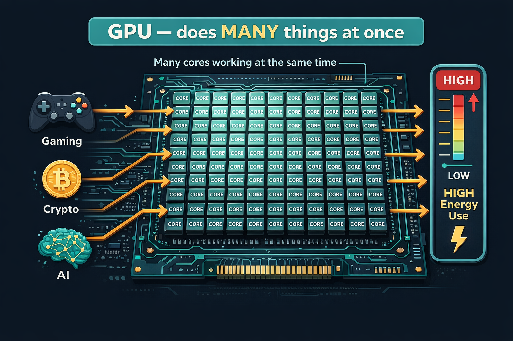

GPU — Graphics Processing Unit

- Originally built for video game graphics; repurposed for AI
- General-purpose: handles video, crypto, neural networks
- 5,120 CUDA cores; ~250W per chip
- Open market — anyone can buy one
- De facto standard for AI research due to accessibility
- Less energy-efficient than TPU for AI-specific tasks